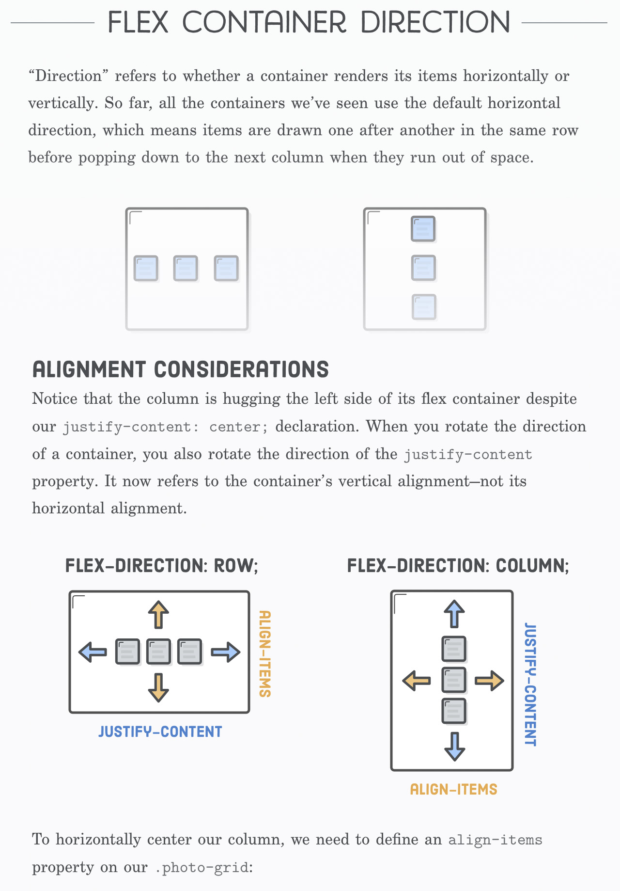

Hierarchy
In a basic sense, hierarchy is the general order or organization of a system. In a corporation, this would refer to the chain of command.
Visual hierarchy is how this order is conveyed through, you guessed it, visual elements. Utilizing visual hierarchy can improve readability and comprehension of a system.
The focus of this page will be on typographic hierarchy and the means by which it can be conveyed effectively.
Stair Structures
Stair structures are a means of conveying typographic and textual elements by depicting sequences of connections with indentation. These indentations symbolize a parent and child relationship, where the parent has less indentation and a child is conveyed with more indentation than the parent it is beneath.
A snippet of CSS code without stair structuring:
@media only screen and (max-width: 720px) { body { margin-top: 88px; padding: 1em; font-size: 12pt; } }A snippet of CSS code composed with stair structuring:
@media only screen and (max-width: 720px) { body { margin-top: 88px; padding: 1em; font-size: 12pt; } }
Stair structuring is a common practice when writing code, as it assists the writer and reader with understanding the relationships between elements.
Without stair structure, it is incredibly difficult to see the relationships between elements without really reading the whole set of data. With stair structuring, it's much easier to understand the relationships between child and parent elements without having to dig too deep.
Holiday gift ideas
Jeremy
- USB type-C hub
- IKEA gift card
- He can get all of the meatballs and pick some furniture he likes
- Super Smash Bros.: Melee
- 3D printer filament
Scott
- Blue light filtering glasses
- Mousse
- Minions 2 Blu-Ray?
- He loves those minions, but I don't know if he owns it already
On top of being helpful to organize code, stair structures are beneficial for listed elements. The relationships between parent and child elements is easy to follow and allows for good readability without altering text styling too much.
Text-size and Styling
The relationships between elements can be conveyed using alterations to text size or other styling. Using text settings that contrast other elements allows for parent-child relationships to be communicated easily in some data sets.
An article about stuff
What is stuff?
Stuff can be big or small.
Big
Big stuff is bigger than small stuff.
. . .
Webpages will almost always require differentiations between multiple heading styles and the body text. Without differentiation between heading styles, parent-child relationships are blurred and unclear.
The above screenshot shows a section of the CSS flexbox guide on the Interneting is Hard website, where hierarchy is demonstrated through changes in text styling. The main heading is a large, thin typeface (along with some additional decoration and centered type), which is contrasted by a sub-heading with smaller, bold type, demonstrating a clear parent-child relationship. Body text uses an consistent typeface which is smaller than the heading and sub-heading in order to demonstrate a parent-child relationship between either element.
It is key to define styles for things like headings where there is contrast between a parent or main heading and any child, and sub-children if necessary.
It is important to classify use cases for the elements early on to maintain consistency throughout the system — avoid making design choices with regard to hierarchy styling that are inconsistent without reason.
Conclusions About Hierarchy
Demonstrating effective hierarchy can ultimately aid with creating a system which can be more easily followed and understood. Poor communication of hierarchy can make a system harder to use.
Pair hierarchy with consistency for the best results — inconsistent hierarchy can make a system just as hard to understand as a system with poor hierarchy.